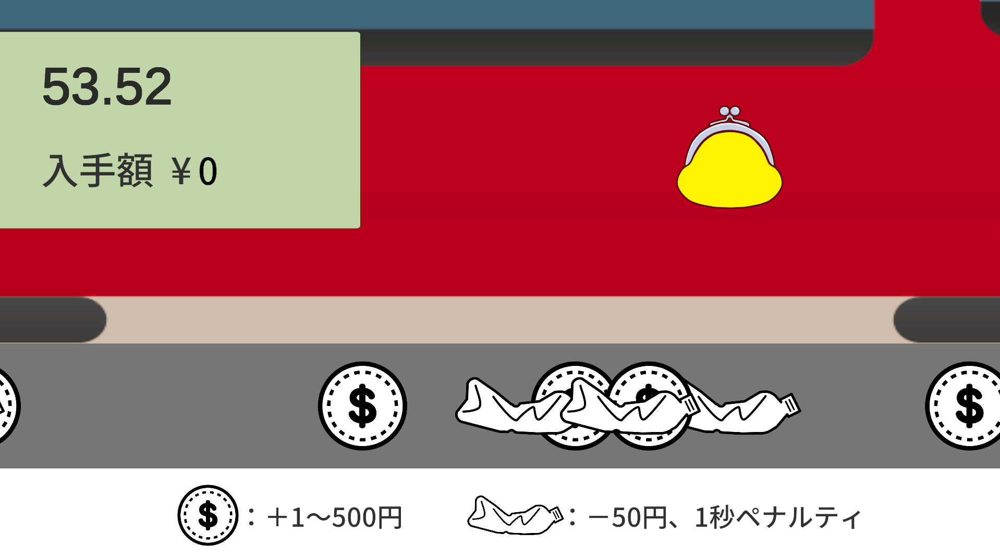
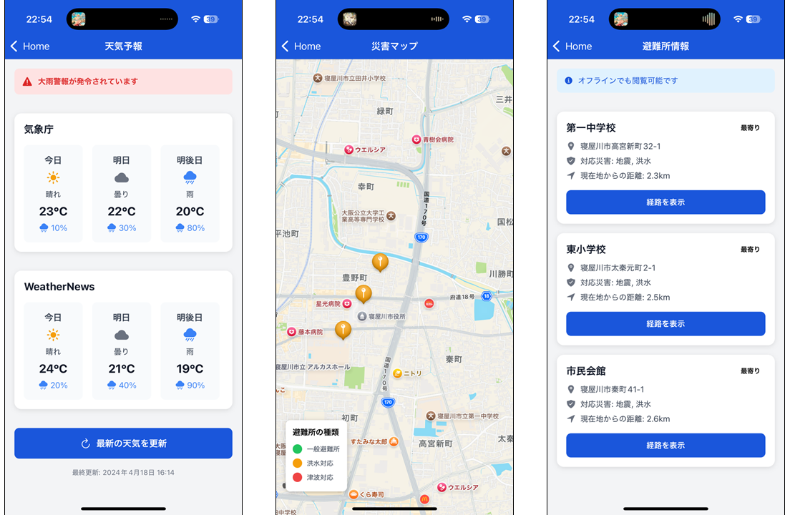
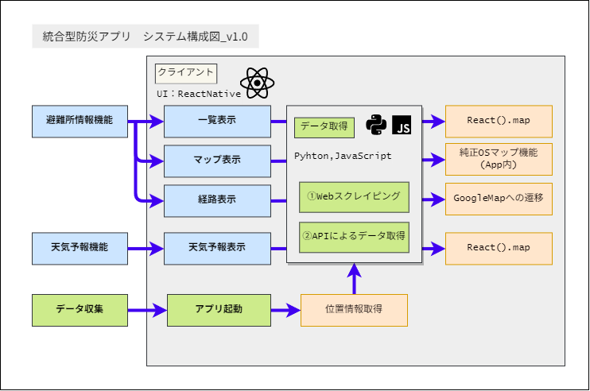
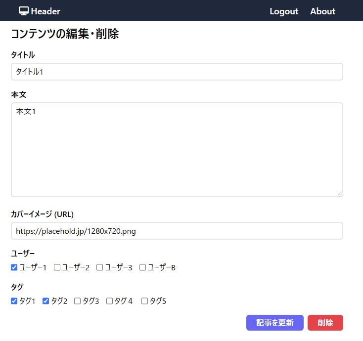
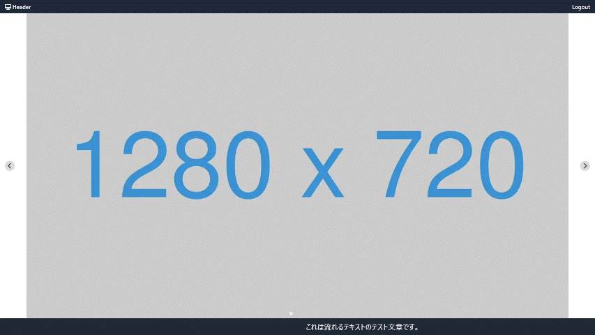

Works
過去の作品集
2022/10
高専祭特設サイト
高専祭特設サイトのデザインとコーディングを行いました。Webフレームワーク（React）を利用して作成しました。現在はサイト閉鎖のため見ることはできません。
2023/6
予定調節くん
バックエンドの練習を兼ねて予定調節くんという、予定調節アプリを作成しました。GitHab認証を導入しており、予定の作成者、参加者などが管理できるようになっています。 Dockerを使ってAPIの開発を行いました。
2023/10
2023年度高専祭特設サイト
昨年に引き続き、高専祭特設サイトをデザイン・コーディングを行いました。React、GatsbyJSベースで作成し、Netlifyでデプロイしました。また、TailwindCSSを使用しました。
第59回高専祭特設サイト
2024/1
9マス鬼ごっこ
1年間のpythonの集大成として9マス鬼ごっこというゲームを作成しました。9マス鬼ごっことは9マスの中にプレイヤーと鬼が配置され、それぞれ同時に別のマスまたは、今いるますにとどまり、プレイヤーと鬼が同じマスになったときにゲームオーバーとなるゲームです。このゲームではプレイヤー側をキーボードを使って操作します。鬼はキーボード操作後にランダムで移動します。また、移動できた回数により、スコアが加算されていきます。
GitHubURL
2024/2
画像エフェクトアプリ
製作時間:約18時間
PySide6を利用して画像エフェクトアプリを作りました。このアプリは任意の画像を入力し、ドット絵風処理をすることができます。また、その出力を画像ファイルに保存することができます。ドット絵処理にはK-means法を用いて減算処理を行っており、画像領域内の色の比率によって指定する色の数に減算処理をすることができます。また、Alpha値の指定ができ、ドット絵処理のドット数を指定することができます。画像処理にはOpenCVを用いて作成しました。
GitHubURL
2025/2
サイネージアプリ
デジタルサイネージアプリを作成しました。技術としてNext.jsを用いて開発を行っており、コンテンツ表示として軽量なものを目指しました。また、DBを使用しており大量のサイネージでも対応可能です。
GitHubURL
デジタルサイネージアプリデモ
2024/12
Unity 1Week GameJam
Unityの勉強もかねてUnity 1Week GameJamに参加しました。
お題は「なし」
半分以上友達の助けを借りながら何とか時間内に完成しました。
1Week GameJam お金がないなら集めればいい
2025/01
統合型防災アプリ
 約4か月をかけてSDGsへの取り組みとして統合型防災アプリをチーム開発しました。
このアプリはサービスとして考案し試作した段階です。
GitHubURL
2025/3
デジタルサイネージアプリのベース作成
 約半年改めてReact（NextJS）を勉強し、その成果として2025年度の高専祭で作成予定のデジタルサイネージのベースを作成した。
サイネージに表示されるコンテンツはsupabaseを使用しデータベースとして保存している 。
GitHubURL